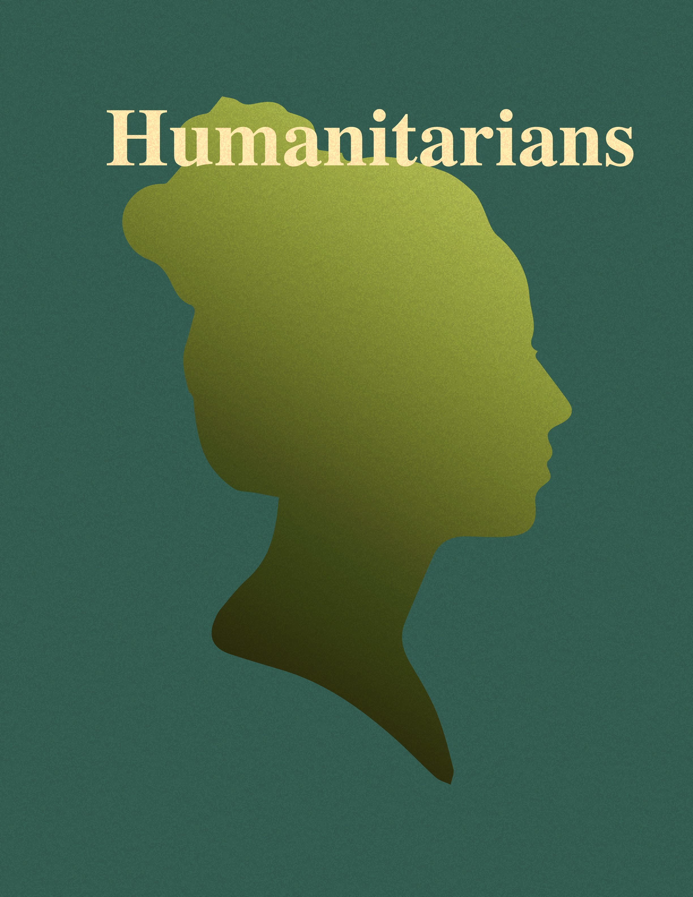
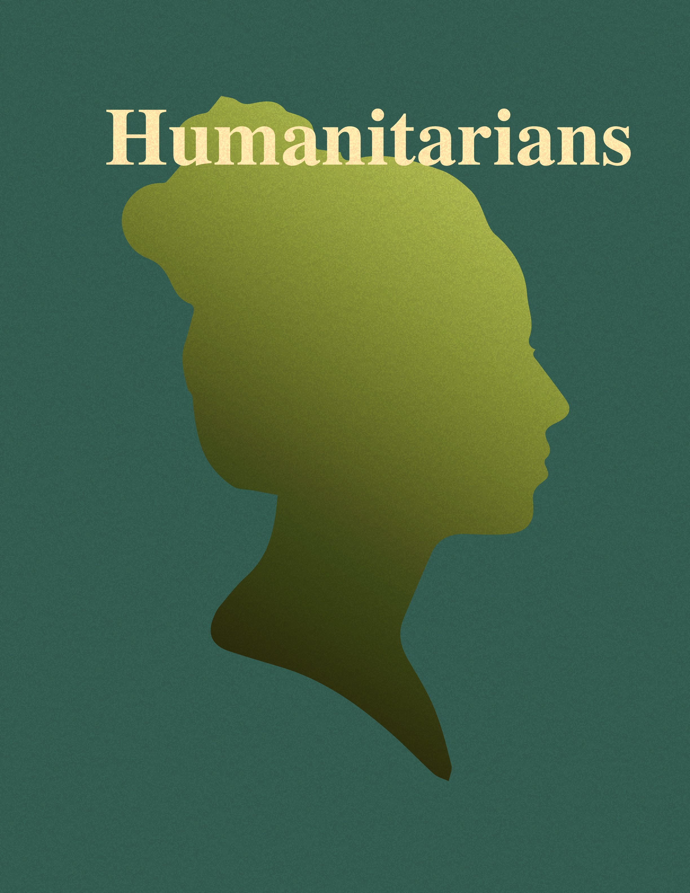
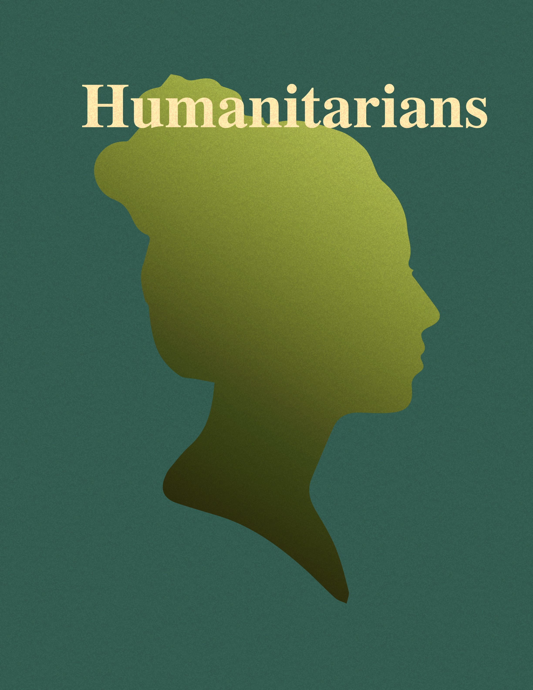
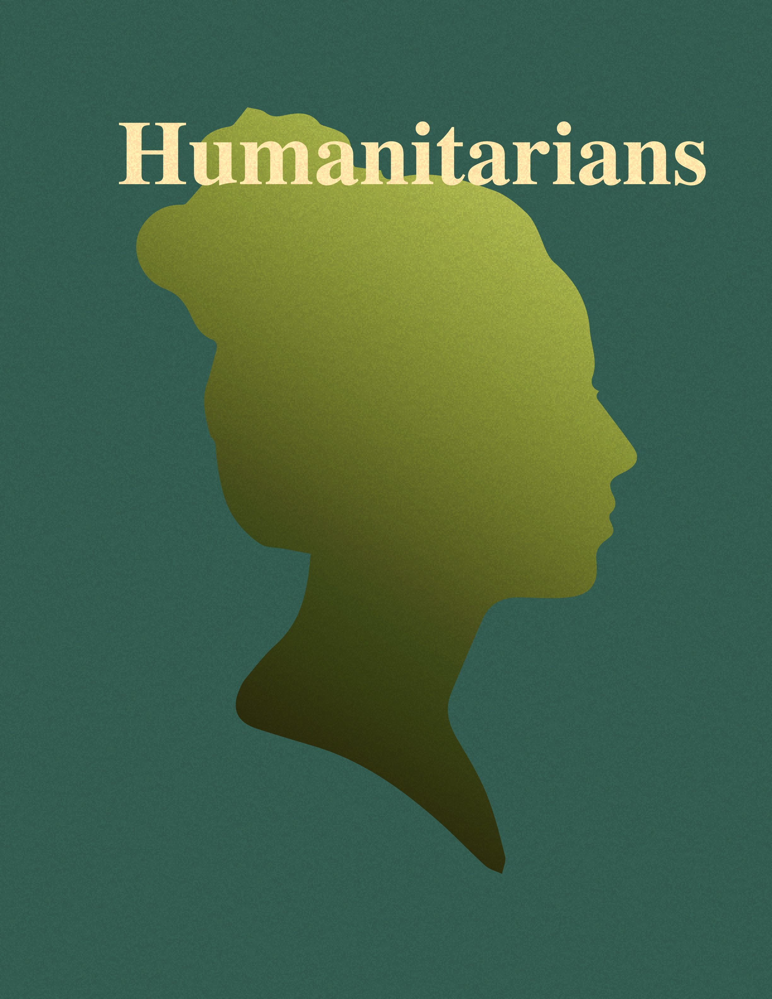
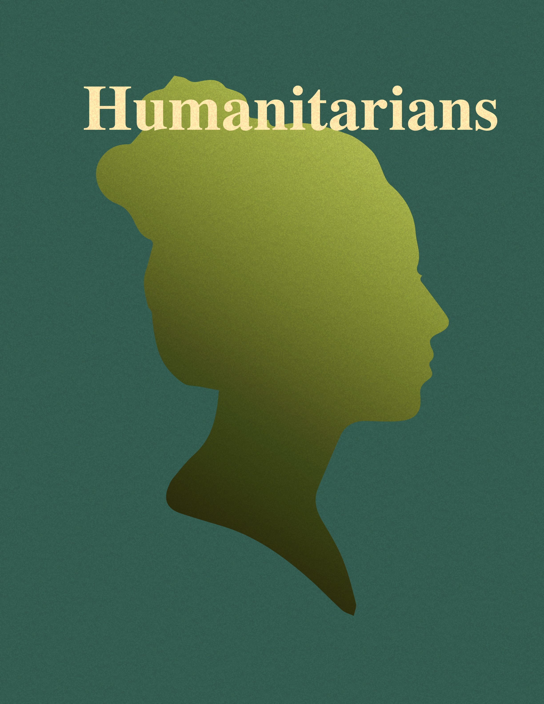

CLOSE
Home
Rebels
Inventors
Humanitarians
Icons
Sheroes Database
In Her Steps
☰

×
Rebels
Tenacity
95%
Patience
100%
Conformity
30%
 



![Malala Yousafzai is a Pakistani activist for female
education and the 2014 Nobel Peace Prize laureate. As a youth advocate, she was nominated for the International Children's Peace Prize
by activist Desmond Tutu. On 9 October 2012, while on a bus in the Swat District, Yousafzai and two other girls were shot by a
Tehrik-i Taliban Pakistan gunman in an assassination attempt in retaliation for her activism. She survived and was later awarded as
the world's youngest Nobel Prize laureate. She is known for human rights advocacy, especially the education of women and
children in her native Swat Valley in Khyber Pakhtunkhwa, northwest Pakistan, where the Tehrik-i-Taliban Pakistan had at times banned
girls from attending school.](Malala Yousafzai.jpg)
![Wangari Maathai was a Kenyan social, environmental
and political activist and the first African woman to win the Nobel Peace Prize. She went on to become the first woman in East and
Central Africa to become a Doctor of Philosophy, receiving her PhD from the University of Nairobi in Kenya. In 1977, Maathai founded
the Green Belt Movement, an environmental non-governmental organization focused on the planting of trees, environmental conservation,
and women's rights. In 1984, she was awarded the Right Livelihood Award for 'converting the Kenyan ecological debate into mass action
for reforestation'. Maathai was an elected member of the Parliament of Kenya and between January 2003 and November 2005 served as
assistant minister for environment and natural resources in the government of President Mwai Kibaki.](Wangari Maathai.jpeg) 
